WaveLines Documentation
Woo Park
Proposal
First of all, I would like to create a data visualization that pulls data from not only users' input but also external datasets. If not, I want to use the customized CSV datasets that are composed of the swell, the wind speed, the time period between sets, and etc. And then, I want to re-render this wave visualization into a 3-d object. My ultimate goal is to show the wave from various perspectives, left, center, right, and maybe from the bottom. I have not figured out how to gamify this yet. But I will use the users' interactions as the main data resource for this project.
Summary
It’s a visualization of wave based on real data at Rockaway beach. There is an app that I look at it almost everyday. It’s called magic-seaweed. It’s an app that shows wave chart, but it’s just numbers and very basic sketch of a wave. So I wanted to make it more exciting than just boring numbers.
On the canvas there are window.innerWidth amount of lines. It is drawing one line on the left, and then shifting one to the right. That one line is drawn based on the three things. Line is drawing based on a sine curve as the outline. Amplitude is applied to the sine curve, which is drawn from the dataset. Offset of the line changes according to the tide(high or low). Last but not least, angle changes as the amplitude changes.
As a result, each wave is different in height and length, using noise_value. Time in this example, (for showing purposes), 1 hr is equal to 10 sec. Low tide, which is the lowest point of offset, is around 04:00am and 16:00pm here.
Data is polled from a website and updates every 15 minutes. I am blending canvas with background image. Two things are happening in the background. A feature that changes 0 opacity(black) to 255 opacity(white). Another filter that changes from red to yellow.
-
Amplitude
- Created an array of empty 500 values called 'y'.
- Started giving values to y[0] and pushed back y[0] value to y[1]
- y[0] to y[1] ... y[index.length -1 ] to y[index.length]
- Added color range on the wave based on their index position.
- Added opacity on the wave based on their index position.
- Added function that changes angle whenever the amplitude of the wave changes.
- if the amplitude(height) is high, the angle has to become small.
- if the amplitude is small, the angle has to get bigger.
-
Noise
- Adding value from the noise curve was better than adding random value because it's more organic.
- First, noise value was applied to each line.
- Second, this wasn't what I wanted. I wanted a more subtle change.
- Third, a new noise value was added to each line. I had to add a noise value to one segment of the wave.
- Then I was able to cut the wave into many segments.
- Found very bottom & top point of the curve.
- Lines between one top point to the next top point was one segment of the wave.
- Adding noise value to the periods of the wave. This makes each wave different and unique (height & lengthwise).
- CSV data
- Based on the sine curve, and the CSV data, I was able to count hours.
- Hour counting variable is linked with the sine curve.
- Based on the hour and the CSV data, I was able to tell high-tide and low-tide.
- Using map function, the offset of waves were adjusted
- The background needed a function that changes color from dark to bright.
- The background needed a function that changes color from red->orange->yellow->white at 6:00 am
- The basic table was added to the HTML.
- The chart was added through javascript so that the chart changes whenever the new CSV data comes in.
- Basic interface
- Preloaded two data sets so that the user can pick either 'today' or 'tomorrow.'
- Made the wave corresponds based on the input 'today' or 'tomorrow'
- Added toggle function on the chart where the user can hide and view as they wish.
- A perspective was added. It responds based on the user's mouseX and mouseY.
- Added 'more' or 'less' lines so that the drawing is a bit more optimized and efficient.
- Table highlights according to the current hour counter.

 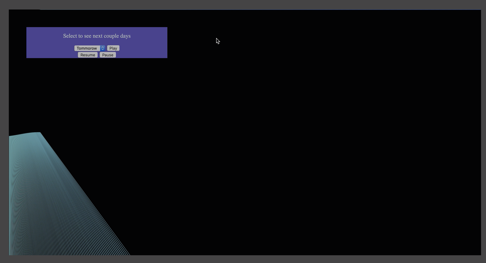
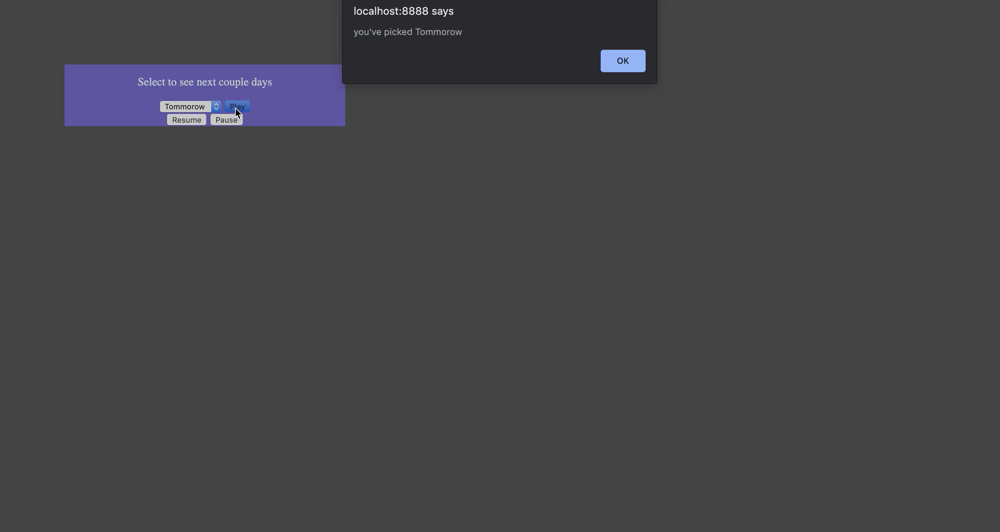
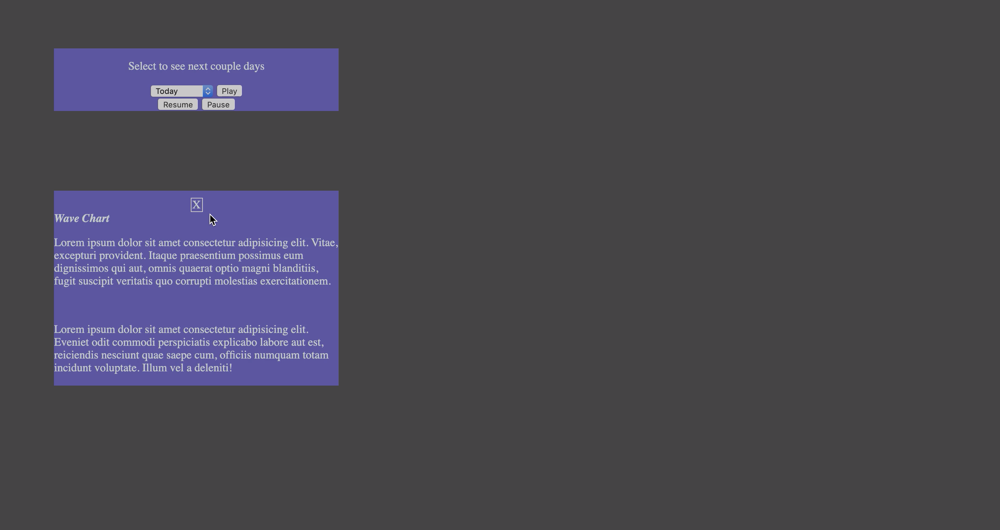
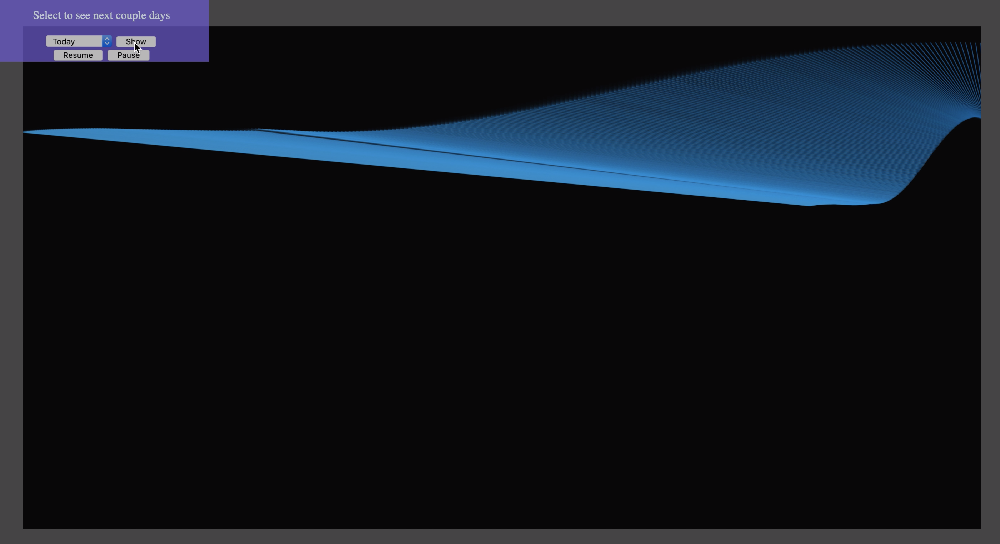
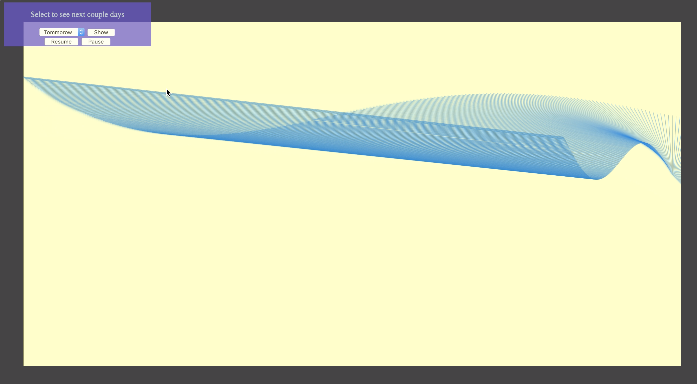
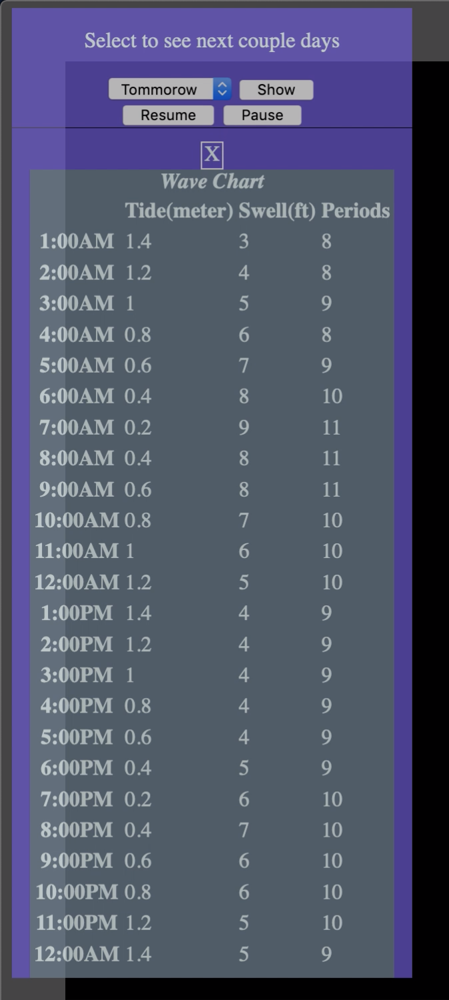
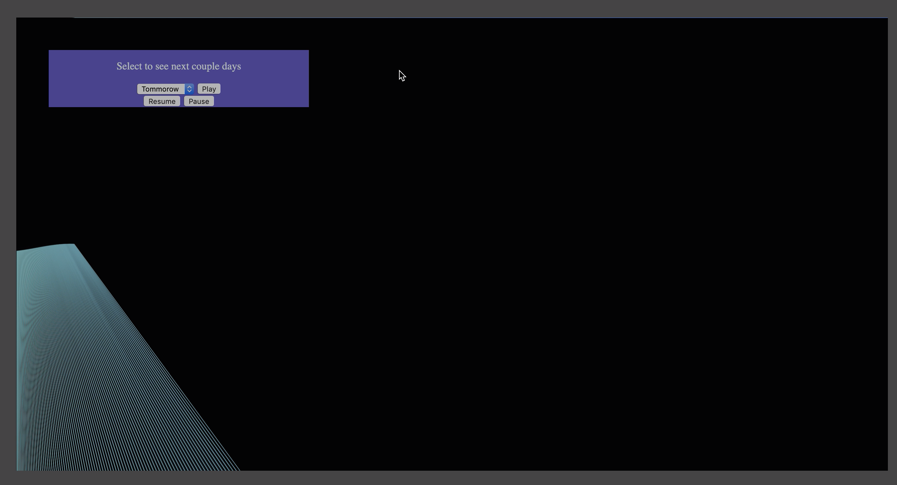
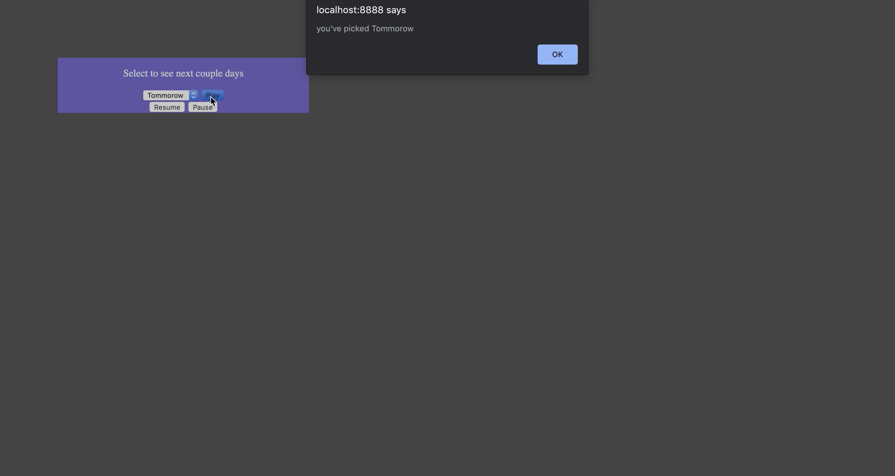
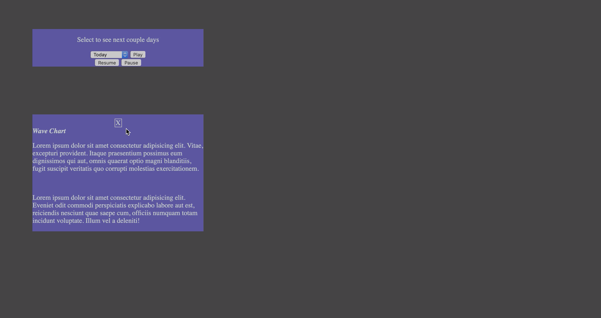
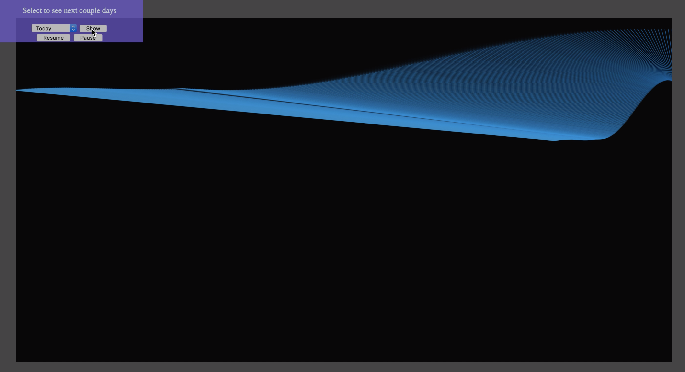
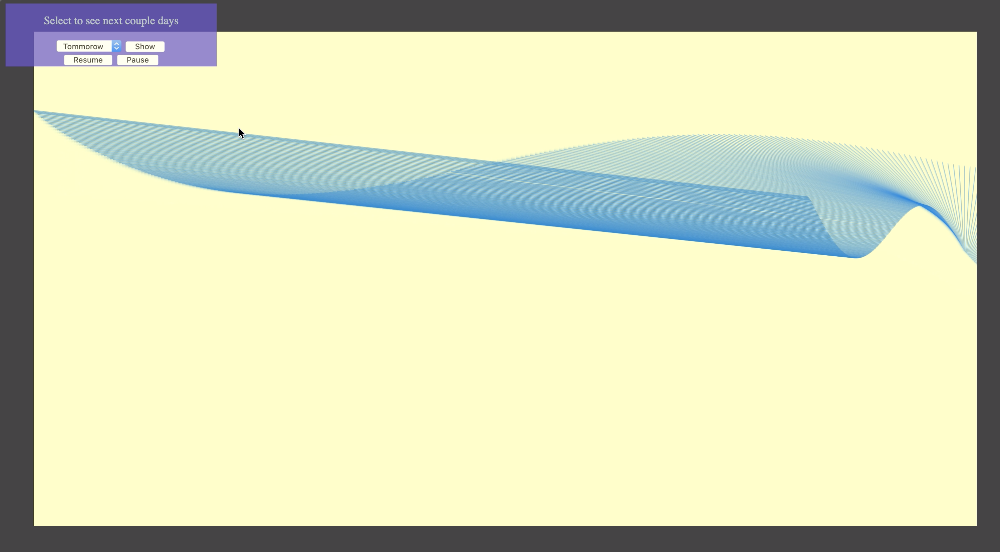
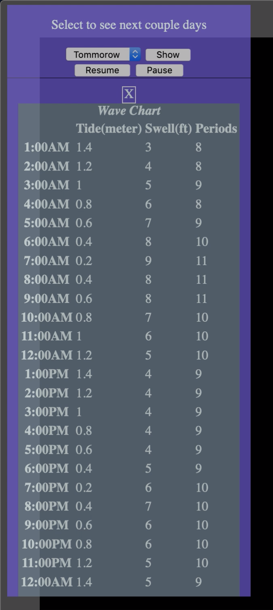